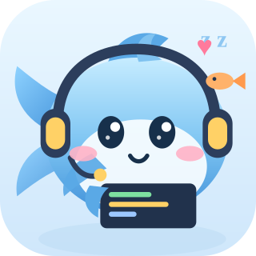
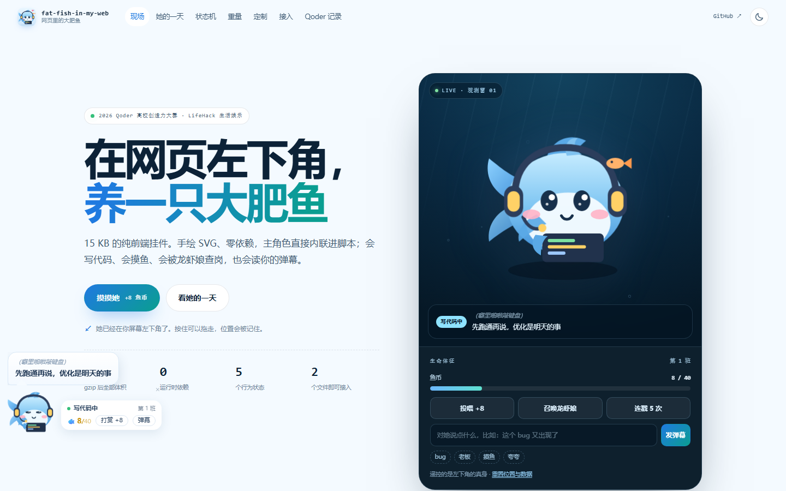
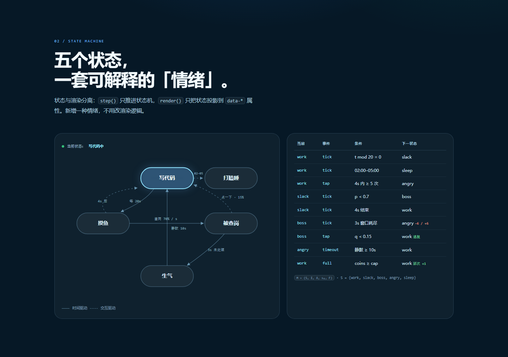
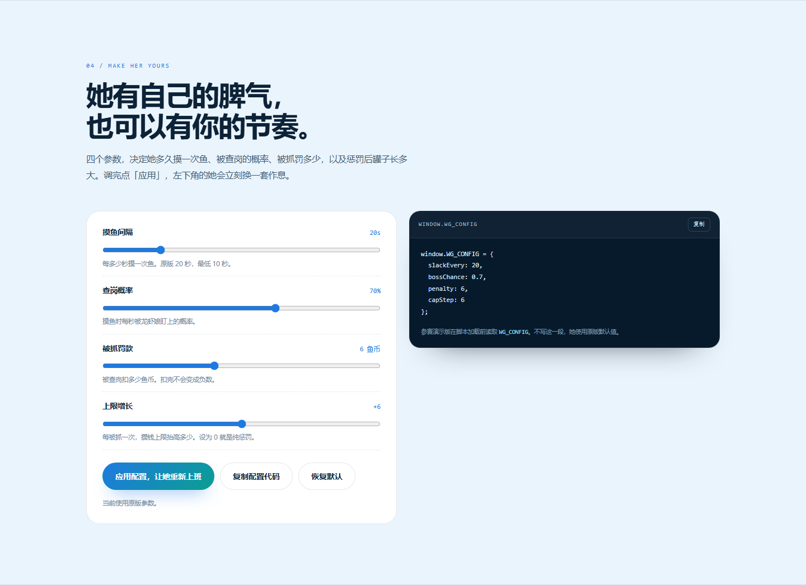
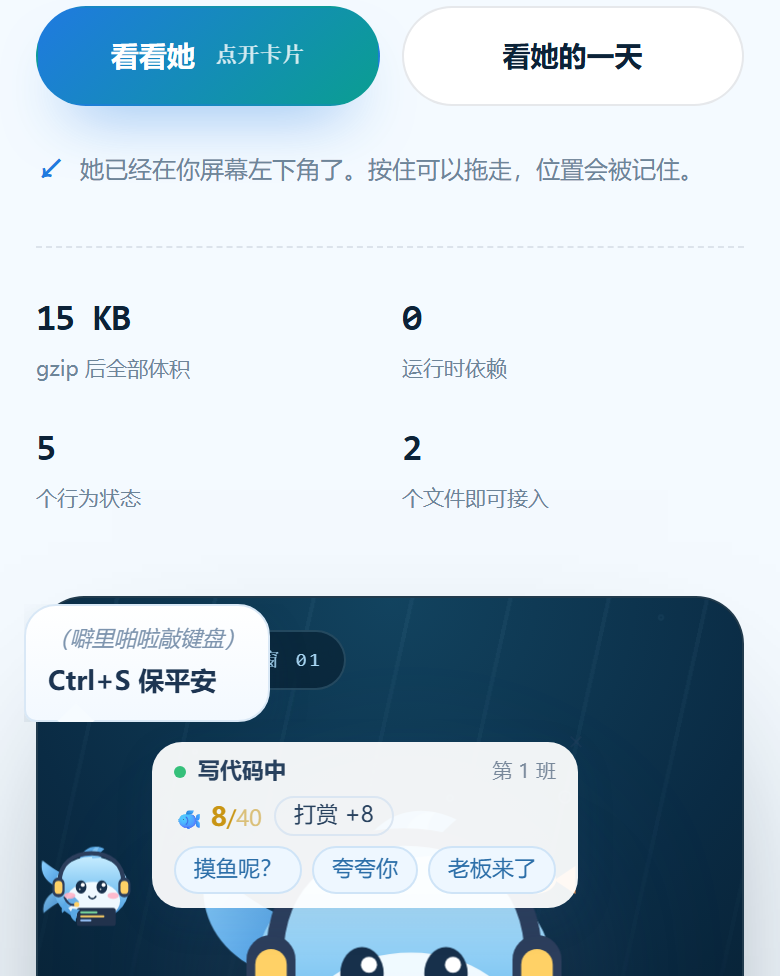

01work
写代码中
进度条一格格往前推，推满就换下一段队列里的任务。大部分时间，她都在干这个。

fat-fish-in-my-web网页里的大肥鱼2026 Qoder 高校创造力大赛 · LifeHack 生活娱乐
15 KB 的纯前端挂件。手绘 SVG、零依赖，主角色直接内联进脚本；会写代码、会摸鱼、会被龙虾娘查岗，也会读你的弹幕。
她已经在你屏幕左下角了。按住可以拖走，位置会被记住。
大肥鱼正在假装很忙
遥控的是左下角的真身 ·
01 / HER DAY
她的行为由一个 1 Hz 的有限状态机推进。每一个动作都有触发条件，也都有代价；每一句台词，都对应一个能解释的状态。
进度条一格格往前推，推满就换下一段队列里的任务。大部分时间，她都在干这个。
每 20 秒摸 4 秒。眼睛眯起来，头顶飘出 z z，旁边游出一条小鱼，台词变成「屏幕亮着就算在工作」。
摸鱼时每秒 70% 概率被查岗，窗口只有 3 秒。点一下有 15% 概率溜掉，否则扣 6 个鱼币。
4 秒内连戳 5 次，她就不给鱼币了。停手 10 秒，她会自己消气，还要嘴硬一句「算你识相」。
凌晨 2 点到 5 点，她直接睡着，冻结全部收益逻辑。戳她只回一句「别吵，睡着了」。
02 / STATE MACHINE
状态与渲染分离：step() 只推进状态机，render() 只把状态投影到 data-* 属性。新增一种情绪，不用改渲染逻辑。
时间驱动 交互驱动
| 当前 | 事件 | 条件 | 下一状态 |
|---|---|---|---|
| work | tick | t mod 20 = 0 | slack |
| work | tick | 02:00–05:00 | sleep |
| work | tap | 4s 内 ≥ 5 次 | angry |
| slack | tick | p < 0.7 | boss |
| slack | tick | 4s 结束 | work |
| boss | tick | 3s 窗口耗尽 | angry −6 / +6 |
| boss | tap | q < 0.15 | work 逃脱 |
| angry | timeout | 静默 ≥ 10s | work |
| work | full | coins ≥ cap | work 班次 +1 |
M = (S, Σ, δ, s₀, F) · S = {work, slack, boss, angry, sleep}
03 / WEIGHT
她的房子很小：一台 2 核 2G、3 Mbps 的云服务器。为了一个角落里的装饰把整站拖慢一个数量级，不划算。所以这里是手绘 SVG + CSS 动画，不是 Live2D。
gzip 后的全部体积。比一张普通的 JPEG 配图还小，比主流 Live2D 方案低约两个数量级。
参赛版按 gzip level 9 实测；原版线上数据见 docs/report.md
同一表现力下，体积降低约 69×–207×。动画只作用于 transform 与 opacity，不触发重排与重绘。
做加法谁都会，难的是知道自己不该加什么。
—— 项目复盘04 / MAKE HER YOURS
四个参数，决定她多久摸一次鱼、被查岗的概率、被抓罚多少，以及惩罚后罐子长多大。调完点「应用」，左下角的她会立刻换一套作息。
参赛演示版在脚本加载前读取 WG_CONFIG。不写这一段，她使用原版默认值。
05 / EMBED
不绑定任何框架。Hexo、Butterfly、Vue、纯 HTML 都行；代码里没有一处写死站点结构。
06 / BUILT WITH QODER
挂件本体是我的原创作品，此前已在 GitHub 公开；这次参赛版由 Qoder 完成梳理、增强、展示站构建与 Qoder Sites 部署。下面是这次实际走过的步骤。
Qoder 通读了 README、技术报告、复盘文和源码，把项目提炼成四个评委能一眼记住的点：15 KB、零依赖、有限状态机、事件解耦。
把鲸鱼娘重绘成 Q 版大肥鱼，再把「网页左下角的大肥鱼」包装成「深海观测窗」：左边讲她是谁，右边的暗色水族箱里放她的实时生命体征和遥控器。
保留原版的状态机、文案和 SVG，增加 window.WG_CONFIG 参数注入与 wg:boss 演示事件；再把我自己博客上跑过一段时间的改动搬回来：气泡独立成贴纸、动作与台词分行、对话锁定 15 秒、打赏与「摸摸」拆开、拖拽按真实尺寸夹紧、靠右边气泡自动翻转。
实现实时遥测（含动作行）、状态机高亮、弹幕飞过、参数定制、接入代码生成，以及手机端的投喂与「点词接话」；本地起服务，在 1440px 与 390px 两套视口逐项点过投喂、查岗、生气、弹幕、对话锁定、拖拽夹紧和配置应用。
用 Qoder Sites 发布为公开站点，评委打开链接就能直接体验；作品帖里附上公开地址、过程截图和技术报告。




+ var CFG = window.WG_CONFIG || {};
+ var SLACK_EVERY = Math.round(num('slackEvery', 20, 5, 120));
+ var BOSS_CHANCE = num('bossChance', 0.7, 0, 1);
+ var PENALTY = Math.round(num('penalty', 6, 0, 30));
+ var CAP_STEP = Math.round(num('capStep', 6, 0, 30));
+
+ // 演示页专用：外部可召唤一次查岗
+ document.addEventListener('wg:boss', function () {
+ game.phase = 'slack';
+ game.bossActive = true;
+ game.bossLeft = 30;
+ render();
+ });原作：鲸鱼娘与龙虾娘的形象、SVG、状态机、文案、技术报告，在参赛前已完成并公开在 GitHub。
这次的角色重绘：按「Q 版大肥鱼」的方向重新绘制了原创 SVG，保留耳机、笔记本与摸鱼玩法；没有搬用第三方同人素材。
参赛版：Qoder 负责梳理代码与叙事、搭建这个展示站、增加参数注入与演示事件、实现遥测/定制/部署；我负责确定主题、审美取舍，并在浏览器里逐项验收交互。
页面里的截图来自本次本地构建与线上验收，不是概念图。